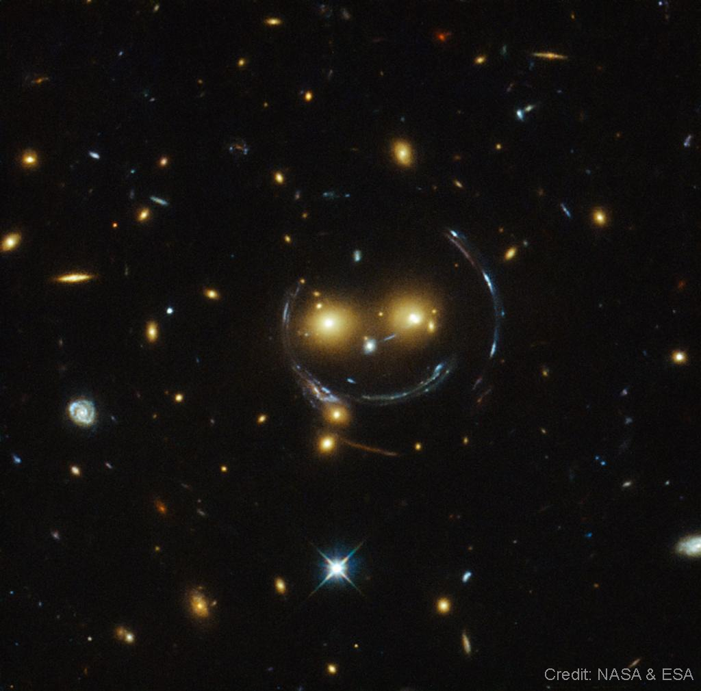
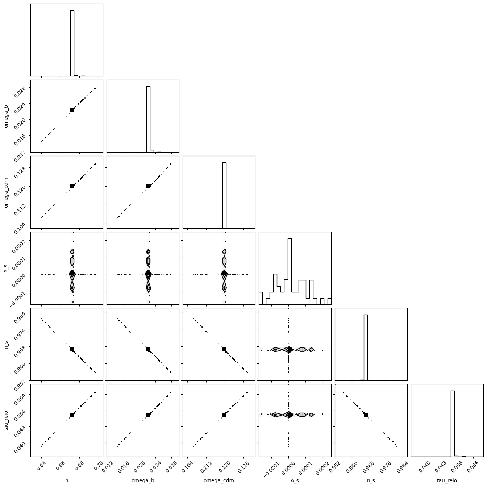
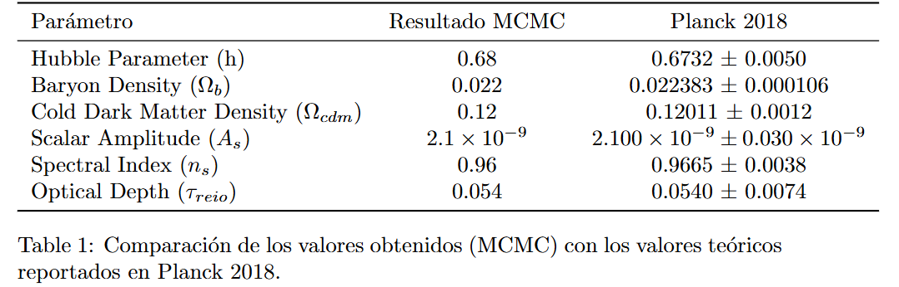

"Desvelando el universo: análisis del CMB y más allá"
Acompáñanos en un viaje por la cosmología moderna, donde la luz antigua nos revela los secretos del espacio-tiempo.
Introducción a las lentes gravitacionales
La gravedad en el universo produce fenómenos visuales impresionantes, como las "lentes gravitacionales", un efecto donde la luz de objetos lejanos se curva al pasar cerca de cuerpos masivos como estrellas o cúmulos de galaxias. Este fenómeno fue sospechado desde los tiempos de Newton, pero no fue hasta más tarde que científicos como Cavendish y Soldner calcularon el ángulo de deflexión que experimentaría la luz debido a un objeto masivo. Hoy, sabemos que una estrella puede generar un microlenteo, y una galaxia o cúmulo de galaxias produce un efecto de lente mayor, distorsionando la luz de los objetos de fondo.
El efecto de lente gravitacional no solo tiene implicaciones teóricas; es una herramienta crucial en la cosmología moderna. Nos permite estudiar la distribución de materia en el universo, especialmente para entender la naturaleza de la materia oscura. Analizando cómo la luz se curva en presencia de diferentes distribuciones de materia, los científicos pueden inferir propiedades clave del universo.

Fondo Cósmico de Microondas
Un ejemplo fascinante es el Fondo Cósmico de Microondas (CMB), la radiación remanente del Big Bang. Aproximadamente 380,000 años después del Big Bang, el universo se enfrió lo suficiente para que se formaran átomos estables, permitiendo que la luz se propagara libremente, creando el CMB. Cuando la luz del CMB atraviesa estructuras masivas, como cúmulos de galaxias, se distorsiona, un efecto conocido como "lensing del CMB".
El estudio de estas distorsiones permite a los cosmólogos extraer información valiosa sobre parámetros como la densidad de la materia oscura (ΩCDM) y el parámetro de Hubble (h), que describe la velocidad de expansión del universo. Al comparar estas observaciones con modelos teóricos, los científicos ajustan estos parámetros para alinearlos mejor con los datos observacionales, mejorando así nuestra comprensión del cosmos.

Efecto del Lensing en el CMB
El efecto de "lensing" o lentes gravitacionales ocurre cuando la luz de objetos distantes, como las galaxias o el Fondo Cósmico de Microondas (CMB), se curva al pasar cerca de objetos masivos, como cúmulos de galaxias. El CMB es la radiación remanente del Big Bang, que se liberó cuando el universo tenía aproximadamente 380,000 años. A medida que esta radiación atraviesa grandes estructuras en el universo, la gravedad de esos objetos masivos distorsiona su camino, alterando la "imagen" del CMB que observamos desde la Tierra.
Este fenómeno no cambia la temperatura promedio del CMB, pero sí afecta la distribución de las fluctuaciones en esa temperatura. La luz se desvía a lo largo de diferentes direcciones al encontrar regiones de mayor densidad, y este efecto puede hacer que algunas áreas del CMB parezcan más grandes o pequeñas de lo que realmente son. En escalas pequeñas, estas distorsiones pueden ser sutiles, pero con el uso de instrumentos avanzados y telescopios de alta precisión, los científicos pueden medir y analizar estas desviaciones. Así, el estudio de las distorsiones en el CMB debido al lensing proporciona pistas sobre cómo están distribuidas las grandes estructuras en el universo y sobre la cantidad y naturaleza de la materia en esas regiones.
Las lentes gravitacionales en el CMB también permiten explorar el efecto de pequeñas variaciones en la densidad de la materia oscura y cómo estas interactúan con la luz. Este análisis revela detalles clave sobre la estructura del universo y abre la puerta a estudios sobre la distribución de la materia, tanto visible como invisible, en diferentes escalas y regiones. Al observar el "lenteado" en el CMB, los científicos pueden trazar un mapa de la materia que se encuentra entre nosotros y el borde del universo observable, mejorando nuestra comprensión de cómo evolucionó el cosmos desde sus primeras etapas.
Parámetros Cosmológicos
Los parámetros cosmológicos son valores que describen...
Para entender y modelar el efecto de las lentes gravitacionales en el CMB, los cosmólogos utilizan varios parámetros fundamentales que describen las propiedades del universo. Entre los más importantes se encuentran:
Densidad de Bariones (Ωb): Representa la densidad de la materia "ordinaria", como átomos y partículas, que forman estrellas, planetas, y seres vivos.
Densidad de Materia Oscura Fría (ΩCDM): Describe la cantidad de materia oscura, una forma de materia que no emite ni absorbe luz, pero que tiene un efecto gravitacional que afecta la expansión del universo.
Parámetro de Hubble (h): Indica la velocidad de expansión del universo, permitiendo calcular la distancia y la velocidad con la que las galaxias se alejan unas de otras.
Estos parámetros se determinan al comparar modelos teóricos con observaciones reales del CMB, usando técnicas como la simulación por cadenas de Markov de Monte Carlo (MCMC). En estos modelos, los valores de Ωb, ΩCDM, y h se ajustan hasta que el modelo concuerda lo mejor posible con los datos observados.
Además, se usan ecuaciones fundamentales, como las ecuaciones de Einstein y la teoría de perturbaciones cosmológicas. Estas ecuaciones explican cómo las perturbaciones en la densidad y el campo gravitacional afectan el CMB. Por ejemplo, la ecuación de deflexión, que relaciona la dirección de la luz con la desviación causada por un potencial gravitacional, permite calcular cuánto se desvía un fotón de su trayectoria original. Una forma de esta ecuación es:
X̃(^n) = X(^n + α(^n))
donde X representa las propiedades del CMB (como temperatura o polarización), y α(^n) es el ángulo de desviación causado por el potencial gravitacional de la estructura de materia en el universo.
Para obtener una descripción precisa, también se calculan los momentos multipolares del potencial de lente, que permiten representar el efecto de la lente en el espectro del CMB. En cosmología, este tipo de análisis ayuda a construir un modelo de cómo se distribuye la materia en el universo y cómo evoluciona con el tiempo. Los cosmólogos siguen mejorando estos modelos al combinar ecuaciones teóricas con observaciones, generando simulaciones cada vez más precisas sobre la formación y evolución del universo desde sus inicios hasta la actualidad.
Métodos de Análisis
Para obtener los valores de los parámetros cosmológicos, se utiliza un análisis detallado que incluye el método de Monte Carlo Markov Chain (MCMC). Esta técnica permite explorar el espacio de parámetros cosmológicos y encontrar los valores más probables que concuerden con las observaciones del Fondo Cósmico de Microondas (CMB). El gráfico que se presenta a continuación muestra las relaciones entre algunos de estos parámetros obtenidos. Las líneas claras que se observan indican una fuerte correlación entre ciertos parámetros, sugiriendo cómo unos pueden influir en los valores de otros.

En el gráfico, podemos ver valores aproximados para varios parámetros, los cuales se pueden comparar con los resultados obtenidos en el estudio de Planck 2018, un experimento fundamental para la cosmología moderna. Entre estos parámetros se encuentran el parámetro de Hubble (h), que mide la velocidad de expansión del universo, la densidad de bariones (Ωb), y la densidad de materia oscura fría (ΩCDM). Los valores obtenidos en nuestro análisis son notablemente cercanos a los valores de Planck 2018, lo que valida tanto el modelo como el método de ajuste que hemos utilizado.

La tabla comparativa ilustra esta concordancia: por ejemplo, el parámetro de Hubble tiene un valor estimado de 0.68 en nuestro análisis, mientras que el valor reportado por Planck es 0.6732 ± 0.0050. De forma similar, para la densidad de bariones (Ωb), obtuvimos un valor de 0.022, muy cercano al de Planck, que es 0.022383 ± 0.000106. Este tipo de precisión sugiere que nuestras simulaciones, basadas en MCMC, logran capturar los detalles esenciales del universo, confirmando que nuestras observaciones y modelos teóricos están bien alineados.
También incluimos una tabla de errores relativos que muestra las diferencias porcentuales entre los valores obtenidos y los reportados por Planck 2018. Estos errores son bajos en general, lo que refuerza la precisión de nuestros resultados y la eficacia del método de ajuste. En conjunto, estos datos respaldan la consistencia del modelo teórico utilizado y las técnicas de ajuste aplicadas.
Gracias a herramientas avanzadas como MCMC y la simulación con CLASS, hemos logrado una modelización detallada de los efectos de las lentes gravitacionales en el CMB. Esta combinación de técnicas nos permite ajustar con precisión parámetros clave como la densidad de materia oscura y el índice espectral, brindando una visión más profunda y detallada del cosmos y de la evolución de sus estructuras.
¡Comparte tus ideas y sugerencias!
Nos encantaría escuchar tus sugerencias sobre temas de investigación o colaboraciones para nuestros proyectos. Por favor, llena el siguiente formulario.
¡Gracias por tu mensaje! Nos pondremos en contacto contigo pronto.